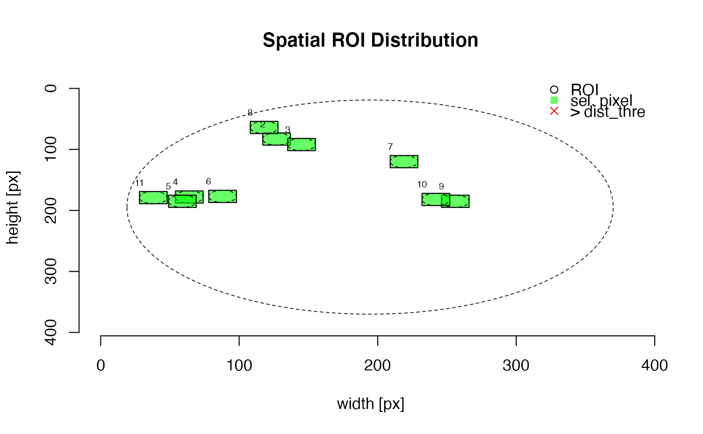

Create Regions of Interest (ROI) Graphic
plot_ROI( object, exclude_ROI = c(1), dist_thre = -Inf, dim.CCD = NULL, plot = TRUE, ... )
| object | RLum.Analysis or a list of such objects (required): data input. Please note that to avoid function errors, only input created by the function read_RF2R is accepted |
|---|---|
| exclude_ROI | numeric (with default): option to remove particular ROIs from the
analysis. Those ROIs are plotted but not coloured and not taken into account
in distance analysis. |
| dist_thre | numeric (optional): euclidean distance threshold in pixel distance. All ROI for which the euclidean distance is smaller are marked. This helps to identify ROIs that might be affected by signal cross-talk. Note: the distance is calculated from the centre of an ROI, e.g., the threshold should include consider the ROIs or grain radius. |
| dim.CCD | numeric (optional): metric x and y for the recorded (chip)
surface in µm. For instance |
| plot | logical (with default): enable or disable plot output to use the function only to extract the ROI data |
| ... | further parameters to manipulate the plot. On top of all arguments of
graphics::plot.default the following arguments are supported: |
An ROI plot and an RLum.Results object with a matrix containing the extracted ROI data and a object produced by stats::dist containing the euclidean distance between the ROIS.
0.1.0
Sebastian Kreutzer, Department of Geography & Earth Sciences, Aberystwyth University (United Kingdom) , RLum Developer Team
Kreutzer, S., 2020. plot_ROI(): Create Regions of Interest (ROI) Graphic. Function version 0.1.0. In: Kreutzer, S., Burow, C., Dietze, M., Fuchs, M.C., Schmidt, C., Fischer, M., Friedrich, J., Riedesel, S., Autzen, M., 2020. Luminescence: Comprehensive Luminescence Dating Data Analysis. R package version 0.9.8. https://r-luminescence.org
file <- system.file("extdata", "RF_file.rf", package = "Luminescence") temp <- read_RF2R(file) plot_ROI(temp)#> #> [RLum.Results-class] #> originator: plot_ROI() #> data: 2 #> .. $ROI : matrix #> .. $euc_dist : dist #> additional info elements: 1